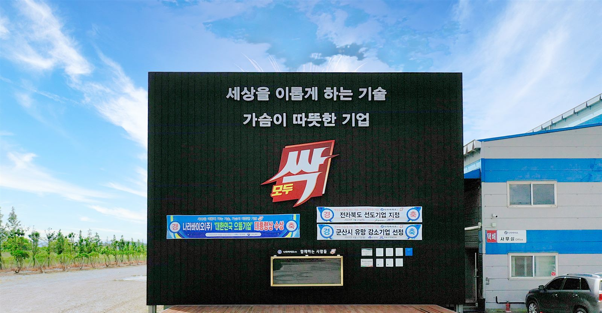
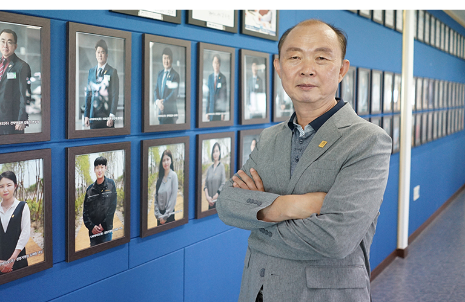
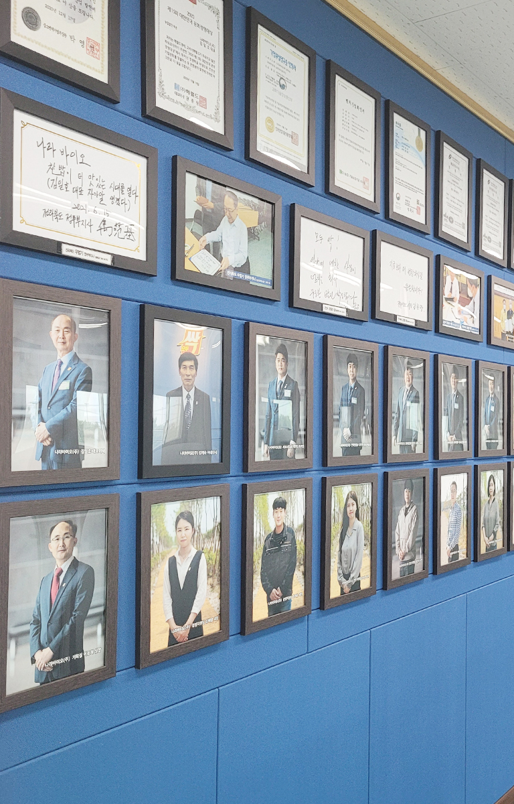

회사소개
세상을 이롭게 하는 기술, 가슴이 따뜻한 기업
VISION · 비전
- 세상을 이롭게 하는 기술
- 가슴이 따뜻한 기업
인사말
농업의 새로운 혁신을 먼저 일궈내겠습니다. 건강과 안전! 우리의 사명입니다.

NTS(제독 유황)과 천연미생물을 결합한 유기농업제품과 친환경 농자재를 생산하는 나라바이오(주)는 다양한 식물의 병해충 방제를 위한 기능성 제품 생산을 위한 끊임없는 연구 개발을 통해 안전하고 기능성이 높은 고품질 농축산물 생산을 위한 농축산물 생산의 획기적인 발전을 마련하기 위해 고민하고 있습니다.
NTS(제독 유황) 국내 특허와 국제학술지에 논문을 다수 게재하며 끊임없는 연구, 뛰어난 기술력, 철저한 품질관리로 ‘세상을 이롭게 하는 기술’ ‘가슴이 따뜻한 기업’이 되도록 모든 임직원들이 고객만족을 위한 최고의 정성을 다하겠습니다.
또한 정식 인허가 과정을 마치고 베트남을 비롯한 동남아와 중국, 멕시코, 터키 등 해외 진출 수출 시장의 확보에 적극 나서 국내원천기술을 바탕으로 한 친환경 세계화에 이바지 하고 있습니다.
나라바이오(주)는 우리나라 먹거리를 책임지는 농축산업인들의 상황을 최우선 가치로 여기고, 합리적 가격과 고품질의 제품을 생산, 공급하여 고객 감동을 실천하겠습니다.
감사합니다.
나라바이오(주) 대표이사 김일호
회사 연혁
26개 작물 38개 병해충에 대해 방제효과를 인정받은 모두싹
혁신적인 제품, 고품질 농산물, 안전한 먹거리 그 시작은 "모두싹"입니다.
-
2022년
- 05월군산시 유망 강소기업 선정, 입제 제형 생산 자동화라인 구축
- 04월중소벤처기업부 메인비즈 선정
- 01월군산시 일자리창출 우수중소기업 표창장 수상
-
2021년
- 12월입제비료 자동화 설비 구축 (일 100톤, 50억원 투자)
- 11월나라바이오(주) 전주지점 설립 (영업 마케팅 본부, 홈쇼핑 스튜디오)
- 11월유황 4종 복합비료 액상제품 자동화 설비라인 구축 (분당 60병, 12억원 투자)
- 06월베트남 수출(6.4) / 베트남 50만 달러 수출 MOU 체결(6.4)
- 06월멕시코 수출·총판 계약 체결 (6.1)
- 05월미량요소복합비료 '모두싹 규산왕' 출시
- 04월창립 3주년 기념행사 (군산새만금컨벤션센터)
- 02월미량요소복합비료 '모두싹 딱풀' 출시
- 01월미량요소복합비료 '모두싹 아미플', 유기농업자재(병해충관리용) '모두싹 균' 출시
-
2020년
- 09월공장 이전 (전주→군산), 면적 14,000평 (건평 2,500평)
- 08월미량요소복합비료 '모두싹 칼마' 출시
- 07월유기농업자재(병해충관리용) '더쎔' 출시
-
2019년
- 11월'모사모(모두싹을 사랑하는 사람들의 모임)' 창단
- 10월뉴질랜드 '모두싹' 해외 수출
- 05월액상석회 비료 등록
-
2018년
- 12월미생물 유황 제조업 특허 등록 (제10-1926732호) / 기업부설연구소 설립
- 11월4종복합 엽면시비용 비료 등록
- 08월유기농업자재공시(작물생육용) '땅부자' / 유기농업자재공시(병해충관리용) '모두싹'
- 04월나라바이오㈜ 설립

인증 · 특허
특허 · 연구
- 2018.12미생물 유황 제조업 특허 등록 (제10-1926732호)
- 2018.12기업부설연구소 설립
유기농업자재 공시 · 비료 등록
- 2018.08유기농업자재공시(작물생육용) '땅부자'
- 2018.08유기농업자재공시(병해충관리용) '모두싹'
- 2018.114종복합 엽면시비용 비료 등록
- 2019.05액상석회 비료 등록
기업 인증 · 선정
- 2022.05군산시 유망 강소기업 선정
- 2022.04중소벤처기업부 메인비즈 선정
- 2022.01군산시 일자리창출 우수중소기업 표창장 수상